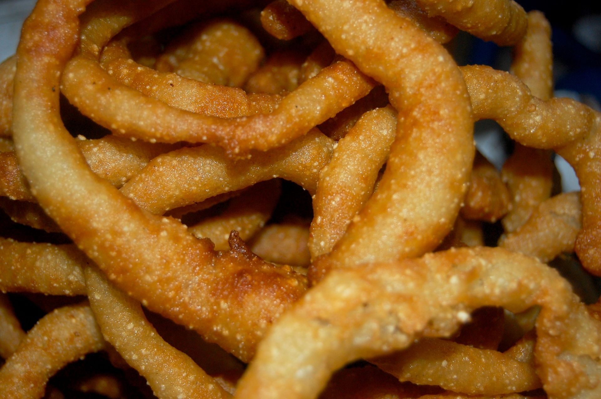

Selroti

Sel roti (Nepali: सेल रोटी) is a traditional homemade ring-shaped sweet rice bread popular in Nepal and the Kumaon region of India.[1] It is mostly prepared during Dashain and Tihar, widely celebrated Hindu festivals in Nepal and Sikkim and Darjeeling regions in India where ethnic Nepalese people have presence.
Ingredients
- 2 cups uncooked rice
- 3 tbsp. sugar
- 3 tbsp. ghee (clarified butter)
- 1/2 cup milk
- 1 Tbsp. rice flour if the batter is thin (liquid)
Steps
- Soak rice overnight.
- Drain out water and put rice in mixer grinder along with sugar and ghee.
- Grind for about 3-4 minutes until it becomes paste.
- If the batter is too liquid, add 1 tbsp. of rice flour.
- Cut the top portion of a plastic bottle to drop batter.
- Add oil 1/2 inch in a pan and heat.
- Drop the batter in oil making round circle.
- Fry until golden brown.